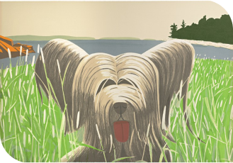
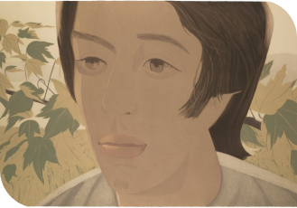
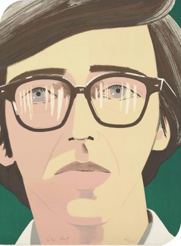

“Face of Poet”
Potrivit lui Alex Katz, aspectul și stilul sunt subiectele operelor sale de artă, care sunt cu siguranță fețe și figuri detașate, distante și detașate. Acești indivizi servesc drept matrice pentru explorările sale de scară, culoare, lumină, formă și compoziție.


